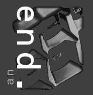
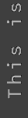

|   | THING yo site's hacked yes, G00d 0ld F1r3f0x 0wned y0ur stuff pure SEX to Geertje my one and only reason to rise and shine even though I have not told her this just yet ;) 8*) Couple of things that struck me this time: You foolz dare use cracked server software ? And ArGoSoft's ftp-server, no really: Give us all a security break here! and hey admin, dont cry now; nothing's been damaged/removed, original index.html renamed to xindex.html I really hate: - Yahoo for killing all WEBRINGS that ran on webring.org - Egroups for ruining all Onelist mailinglists - all transitions like that - big shot IT-companies that buy out good functioning projects and businesses and by doing so ruin all the fun and destroy their hard work. - UPC for buying out the Amsterdam cable internet/TV systems - NSA (for their overall stupidity) THANKUSE |